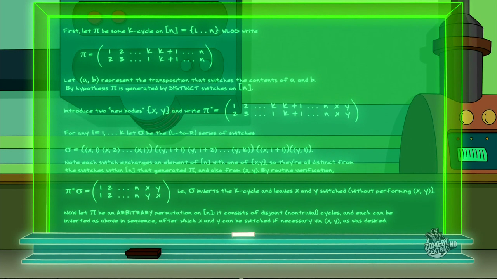

You are given an array with with information about the recent swaps. Each entry is a set with two names of robots (bodies). You can operate with bodies which were written in the journal and with two additional bodies - “nikola” and “sophia”. Find the sequence of the swaps required to return all minds to their original bodies. The result should be represented as a list/tuple of sets with two names in each.
Input: A journal as a tuple of sets. Each set contains two strings.
Output: The sequence of actions as a list/tuple of sets. Each set contains two strings.
Example:
mind_switcher(({"scout", "super"},)) == ({"super", "nikola"}, {"sophia", "scout"},
{"nikola", "scout"}, {"sophia", "super"},
{"nikola", "sophia"})
Precondition:
0 < len(journal) ≤ 55
Solution:
def mind_switcher(journal):
journal2 = [sorted(list(record)) for record in journal]
infdict = {}
for r in reduce(lambda x,y: x|y, journal, {'nikola', 'sophia'}):
infdict[r] = r
for r1, r2 in journal:
infdict[r1], infdict[r2] = infdict[r2], infdict[r1]
groups, robots = [], [r for r in infdict.keys() if r not in {'nikola', 'sophia'}]
while robots:
chain = robots[:1]
while infdict[chain[-1]] not in chain:
chain.append(infdict[chain[-1]])
if len(chain)>1: groups.append(chain)
robots = [r for r in robots if r not in chain]
moves = []
for g in groups:
moves += [{'nikola', g[0]}] + \
[{'sophia', g[i]} for i in range(1, len(g))] + \
[{'nikola', g[1]}, {'sophia', g[0]}]
moves += [{'nikola', 'sophia'}] if len(groups)%2 else []
return moves